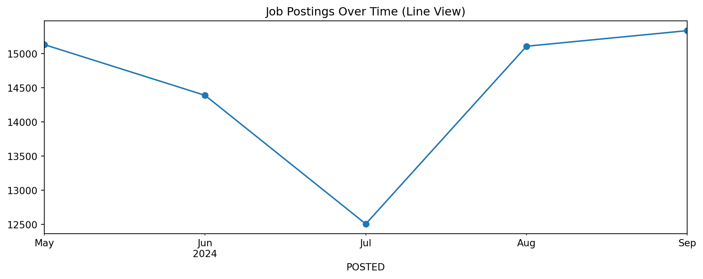
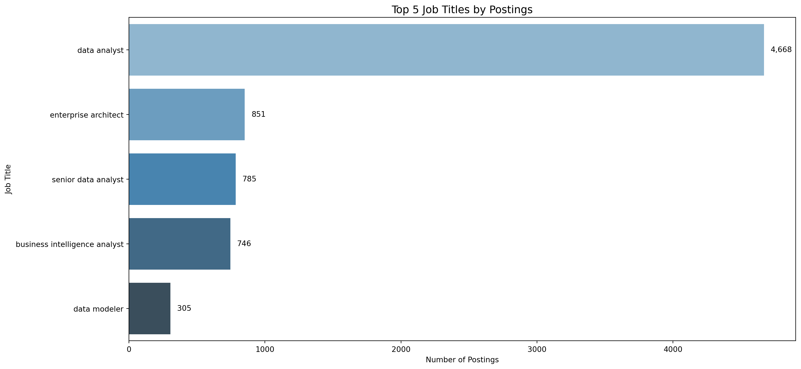
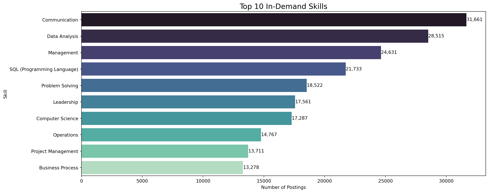
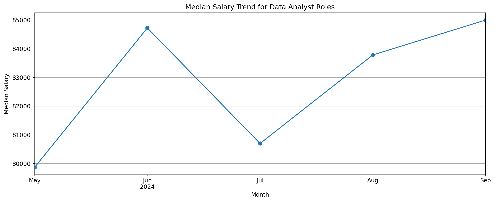
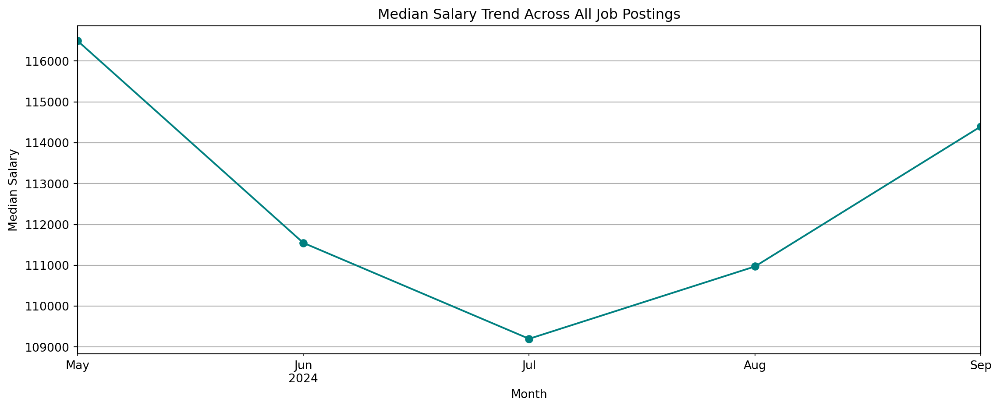
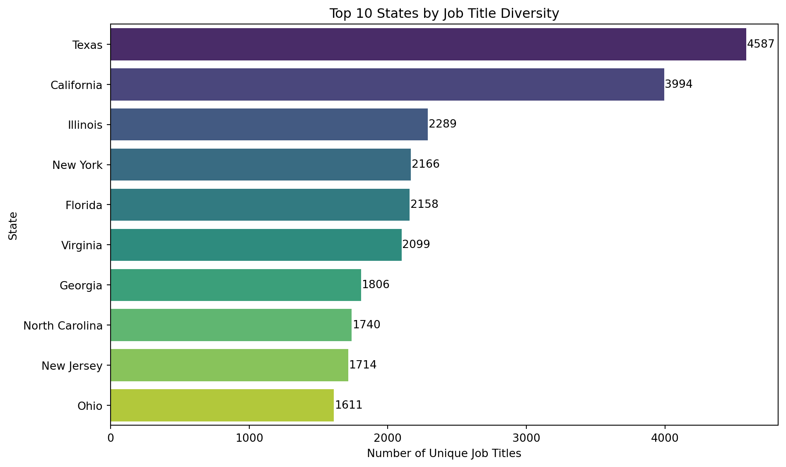
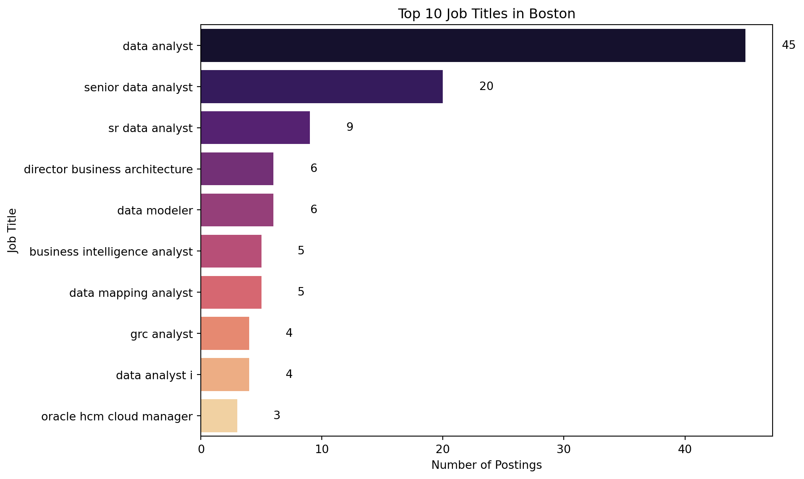
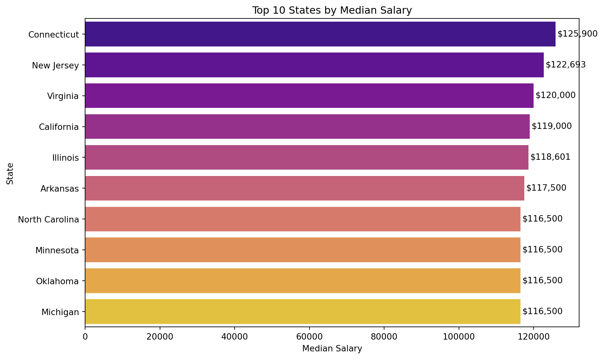
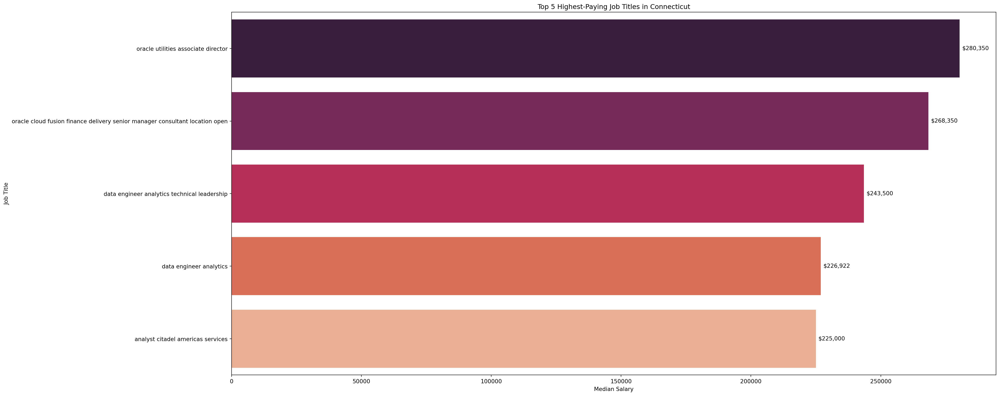

/tmp/ipykernel_12513/3156899603.py:3: DtypeWarning:
Columns (19,30) have mixed types. Specify dtype option on import or set low_memory=False.
ID
LAST_UPDATED_DATE
LAST_UPDATED_TIMESTAMP
DUPLICATES
POSTED
EXPIRED
DURATION
SOURCE_TYPES
SOURCES
URL
...
NAICS_2022_2
NAICS_2022_2_NAME
NAICS_2022_3
NAICS_2022_3_NAME
NAICS_2022_4
NAICS_2022_4_NAME
NAICS_2022_5
NAICS_2022_5_NAME
NAICS_2022_6
NAICS_2022_6_NAME
0
1f57d95acf4dc67ed2819eb12f049f6a5c11782c
9/6/2024
2024-09-06 20:32:57.352 Z
0.0
6/2/2024
6/8/2024
6.0
[\n "Company"\n]
[\n "brassring.com"\n]
[\n "https://sjobs.brassring.com/TGnewUI/Sear...
...
44.0
Retail Trade
441.0
Motor Vehicle and Parts Dealers
4413.0
Automotive Parts, Accessories, and Tire Retailers
44133.0
Automotive Parts and Accessories Retailers
441330.0
Automotive Parts and Accessories Retailers
1
0cb072af26757b6c4ea9464472a50a443af681ac
8/2/2024
2024-08-02 17:08:58.838 Z
0.0
6/2/2024
8/1/2024
NaN
[\n "Job Board"\n]
[\n "maine.gov"\n]
[\n "https://joblink.maine.gov/jobs/1085740"\n]
...
56.0
Administrative and Support and Waste Managemen...
561.0
Administrative and Support Services
5613.0
Employment Services
56132.0
Temporary Help Services
561320.0
Temporary Help Services
2
85318b12b3331fa490d32ad014379df01855c557
9/6/2024
2024-09-06 20:32:57.352 Z
1.0
6/2/2024
7/7/2024
35.0
[\n "Job Board"\n]
[\n "dejobs.org"\n]
[\n "https://dejobs.org/dallas-tx/data-analys...
...
52.0
Finance and Insurance
524.0
Insurance Carriers and Related Activities
5242.0
Agencies, Brokerages, and Other Insurance Rela...
52429.0
Other Insurance Related Activities
524291.0
Claims Adjusting
3
1b5c3941e54a1889ef4f8ae55b401a550708a310
9/6/2024
2024-09-06 20:32:57.352 Z
1.0
6/2/2024
7/20/2024
48.0
[\n "Job Board"\n]
[\n "disabledperson.com",\n "dejobs.org"\n]
[\n "https://www.disabledperson.com/jobs/5948...
...
52.0
Finance and Insurance
522.0
Credit Intermediation and Related Activities
5221.0
Depository Credit Intermediation
52211.0
Commercial Banking
522110.0
Commercial Banking
4
cb5ca25f02bdf25c13edfede7931508bfd9e858f
6/19/2024
2024-06-19 07:00:00.000 Z
0.0
6/2/2024
6/17/2024
15.0
[\n "FreeJobBoard"\n]
[\n "craigslist.org"\n]
[\n "https://modesto.craigslist.org/sls/77475...
...
99.0
Unclassified Industry
999.0
Unclassified Industry
9999.0
Unclassified Industry
99999.0
Unclassified Industry
999999.0
Unclassified Industry
5 rows × 131 columns
2 📈 Job Postings Over Time

Between May and September 2024, job postings remained relatively stable, averaging around 15,000 per month. A noticeable dip occurred in July, possibly reflecting a seasonal slowdown in hiring. Activity quickly rebounded in August and peaked slightly in September, indicating renewed demand in the job market.
3 🏆 Top 5 Job Titles by Postings
/tmp/ipykernel_12513/3648456462.py:9: FutureWarning:
Passing `palette` without assigning `hue` is deprecated and will be removed in v0.14.0. Assign the `y` variable to `hue` and set `legend=False` for the same effect.

The role of Data Analyst dominates the job market with 4,668 postings, far ahead of the next most common roles. Other high-demand positions include Enterprise Architect, Senior Data Analyst, and Business Intelligence Analyst, each with approximately 750–850 postings.
4 💡 Top 10 In-Demand Skills
/tmp/ipykernel_12513/3489773451.py:11: FutureWarning:
Passing `palette` without assigning `hue` is deprecated and will be removed in v0.14.0. Assign the `y` variable to `hue` and set `legend=False` for the same effect.

The most in-demand skill is Communication, appearing in over 31,000 postings. Other top skills include Data Analysis, Management, and SQL, highlighting strong demand for analytical and interpersonal capabilities.
5 💰 Salary Trend: Data Analyst Roles

Between May and September 2024, Data Analyst salaries rose steadily, peaking in September at $85,000. The trend reflects increasing demand for data roles as organizations plan for Q4 growth.
6 💰 Median Salary Trend: All Job Postings

In May 2024, the median salary peaked at over $116,000 and dipped through July. It rebounded again in August and September, potentially due to seasonal hiring rebounds.
7 🌎 States with Most Diverse Job Titles
/tmp/ipykernel_12513/2791674365.py:4: FutureWarning:
Passing `palette` without assigning `hue` is deprecated and will be removed in v0.14.0. Assign the `y` variable to `hue` and set `legend=False` for the same effect.

8 📍 Top Job Titles in Boston
/tmp/ipykernel_12513/195928150.py:5: FutureWarning:
Passing `palette` without assigning `hue` is deprecated and will be removed in v0.14.0. Assign the `y` variable to `hue` and set `legend=False` for the same effect.

9 💵 Top-Paying States
/tmp/ipykernel_12513/820416137.py:4: FutureWarning:
Passing `palette` without assigning `hue` is deprecated and will be removed in v0.14.0. Assign the `y` variable to `hue` and set `legend=False` for the same effect.

Connecticut leads with a median salary of $125,900, followed by New Jersey and Virginia. These figures indicate a concentration of high-paying jobs in both coastal and emerging markets.
10 🏅 Highest-Paying Jobs in Connecticut
/tmp/ipykernel_12513/1856958558.py:12: FutureWarning:
Passing `palette` without assigning `hue` is deprecated and will be removed in v0.14.0. Assign the `y` variable to `hue` and set `legend=False` for the same effect.

The highest-paying job in Connecticut is Oracle Utilities Associate Director, with a median salary of $280,350. Other top roles include senior consultants and data engineering leadership
Source Code
---title: "Exploratory Data Analysis on Job Postings"format: htmljupyter: python3---## 📥 Load Dataset```{python}import pandas as pddf = pd.read_csv("lightcast_job_postings.csv")df.head()```---## 📈 Job Postings Over Time```{python}df['POSTED'] = pd.to_datetime(df['POSTED'], errors='coerce')job_trend = df['POSTED'].dt.to_period('M').value_counts().sort_index()job_trend.sort_index().plot(kind='line', marker='o', figsize=(12, 4), title='Job Postings Over Time (Line View)')```Between May and September 2024, job postings remained relatively stable, averaging around 15,000 per month. A noticeable dip occurred in July, possibly reflecting a seasonal slowdown in hiring. Activity quickly rebounded in August and peaked slightly in September, indicating renewed demand in the job market.---## 🏆 Top 5 Job Titles by Postings```{python}import matplotlib.pyplot as pltimport seaborn as sns# Prepare datatop_titles = df['TITLE_CLEAN'].value_counts().head(5)# Plotplt.figure(figsize=(15, 7))sns.barplot(x=top_titles.values, y=top_titles.index, palette="Blues_d")plt.xlabel("Number of Postings")plt.ylabel("Job Title")plt.title("Top 5 Job Titles by Postings", fontsize=14)for i, val inenumerate(top_titles.values): plt.text(val +50, i, f"{val:,}", va='center', fontsize=10)plt.tight_layout()plt.show()```The role of Data Analyst dominates the job market with 4,668 postings, far ahead of the next most common roles. Other high-demand positions include Enterprise Architect, Senior Data Analyst, and Business Intelligence Analyst, each with approximately 750–850 postings.---## 💡 Top 10 In-Demand Skills```{python}import astclean_skills = df['SKILLS_NAME'].dropna().apply(lambda x: ast.literal_eval(x) if x.strip().startswith('[') else [])all_skills = clean_skills.explode().str.strip()top_skills = all_skills.value_counts().head(10)plt.figure(figsize=(15, 6))sns.barplot(x=top_skills.values, y=top_skills.index, palette='mako')plt.title("Top 10 In-Demand Skills", fontsize=16)plt.xlabel("Number of Postings")plt.ylabel("Skill")for i, val inenumerate(top_skills.values): plt.text(val +5, i, f"{val:,}", va='center')plt.tight_layout()plt.show()```The most in-demand skill is Communication, appearing in over 31,000 postings. Other top skills include Data Analysis, Management, and SQL, highlighting strong demand for analytical and interpersonal capabilities.---## 💰 Salary Trend: Data Analyst Roles```{python}df_da = df[df['TITLE_CLEAN'].str.lower() =='data analyst'].copy()df_da['SALARY_MEAN'] = df_da[['SALARY_FROM', 'SALARY_TO']].mean(axis=1)df_da['POSTED_MONTH'] = df_da['POSTED'].dt.to_period('M')salary_trend = df_da.groupby('POSTED_MONTH')['SALARY_MEAN'].median()plt.figure(figsize=(12, 5))salary_trend.sort_index().plot(marker='o')plt.title("Median Salary Trend for Data Analyst Roles")plt.xlabel("Month")plt.ylabel("Median Salary")plt.xticks(rotation=45)plt.grid(True)plt.tight_layout()plt.show()```Between May and September 2024, Data Analyst salaries rose steadily, peaking in September at $85,000. The trend reflects increasing demand for data roles as organizations plan for Q4 growth.---## 💰 Median Salary Trend: All Job Postings```{python}df['SALARY_MEAN'] = df[['SALARY_FROM', 'SALARY_TO']].mean(axis=1)df['POSTED_MONTH'] = df['POSTED'].dt.to_period('M')monthly_salary = df.groupby('POSTED_MONTH')['SALARY_MEAN'].median().sort_index()plt.figure(figsize=(12, 5))monthly_salary.plot(marker='o', color='teal')plt.title("Median Salary Trend Across All Job Postings")plt.xlabel("Month")plt.ylabel("Median Salary")plt.xticks(rotation=45)plt.grid(True)plt.tight_layout()plt.show()```In May 2024, the median salary peaked at over $116,000 and dipped through July. It rebounded again in August and September, potentially due to seasonal hiring rebounds.---## 🌎 States with Most Diverse Job Titles```{python}job_diversity = df.groupby('STATE_NAME')['TITLE_CLEAN'].nunique().sort_values(ascending=False)plt.figure(figsize=(10, 6))sns.barplot(x=job_diversity.head(10).values, y=job_diversity.head(10).index, palette="viridis")plt.title("Top 10 States by Job Title Diversity")plt.xlabel("Number of Unique Job Titles")plt.ylabel("State")for i, val inenumerate(job_diversity.head(10).values): plt.text(val +5, i, f"{val}", va='center')plt.tight_layout()plt.show()```---## 📍 Top Job Titles in Boston```{python}df_boston = df[df['CITY_NAME'].str.lower() =='boston, ma']boston_top_titles = df_boston['TITLE_CLEAN'].value_counts().head(10)plt.figure(figsize=(10, 6))sns.barplot(x=boston_top_titles.values, y=boston_top_titles.index, palette="magma")plt.title("Top 10 Job Titles in Boston")plt.xlabel("Number of Postings")plt.ylabel("Job Title")for i, val inenumerate(boston_top_titles.values): plt.text(val +3, i, f"{val}", va='center')plt.tight_layout()plt.show()```---## 💵 Top-Paying States```{python}top_states_salary = df.groupby('STATE_NAME')['SALARY_MEAN'].median().sort_values(ascending=False)plt.figure(figsize=(10, 6))sns.barplot(x=top_states_salary.head(10).values, y=top_states_salary.head(10).index, palette="plasma")plt.title("Top 10 States by Median Salary")plt.xlabel("Median Salary")plt.ylabel("State")for i, val inenumerate(top_states_salary.head(10).values): plt.text(val +500, i, f"${int(val):,}", va='center')plt.tight_layout()plt.show()```Connecticut leads with a median salary of $125,900, followed by New Jersey and Virginia. These figures indicate a concentration of high-paying jobs in both coastal and emerging markets.---## 🏅 Highest-Paying Jobs in Connecticut```{python}df_ct = df[df['STATE_NAME'].str.lower() =='connecticut'].copy()df_ct['SALARY_MEAN'] = df_ct[['SALARY_FROM', 'SALARY_TO']].mean(axis=1)top_ct_jobs = ( df_ct.groupby('TITLE_CLEAN')['SALARY_MEAN'] .median() .sort_values(ascending=False) .head(5))plt.figure(figsize=(25, 10))sns.barplot(x=top_ct_jobs.values, y=top_ct_jobs.index, palette="rocket")plt.title("Top 5 Highest-Paying Job Titles in Connecticut")plt.xlabel("Median Salary")plt.ylabel("Job Title")for i, val inenumerate(top_ct_jobs.values): plt.text(val +1000, i, f"${int(val):,}", va='center')plt.tight_layout()plt.show()```The highest-paying job in Connecticut is Oracle Utilities Associate Director, with a median salary of $280,350. Other top roles include senior consultants and data engineering leadership